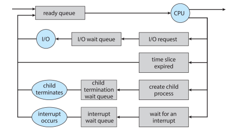

Estructuras de datos en Sistemas operativos

Las estructuras de datos en los sistemas operativos son fundamentales para manejar eficientemente grandes cantidades de datos y realizar operaciones rápidas y precisas. Estas estructuras permiten organizar, almacenar y recuperar datos de manera efectiva, lo que es crucial para el funcionamiento de los sistemas operativos y la programación en general
Algunas estructuras de datos
- Listas y Colas:
- Listas Enlazadas: Se utilizan para mantener listas de elementos dinámicamente asignados en la memoria.
- Colas: Estructuras FIFO (primero en entrar, primero en salir) utilizadas para gestionar tareas pendientes, procesos en espera, etc.
- Pilas:
Estructuras LIFO (último en entrar, primero en salir) utilizadas para gestionar llamadas a funciones, manejo de interrupciones, entre otras.
- Árboles:
- Árboles de Procesos: Se utilizan para representar la jerarquía de procesos en el sistema operativo.
- Árboles de Directorios: Estructuras que representan la estructura de directorios y archivos en un sistema de archivos.
- Tablas:
- Tabla de Procesos: Una tabla que mantiene información sobre todos los procesos en ejecución, como identificadores, estados y prioridades.
- Tabla de Archivos: Se utiliza para gestionar información sobre archivos abiertos, incluyendo descriptores de archivos y permisos.
- Buffers y Colas de Mensajes:
- Buffers de Entrada/Salida: Estructuras utilizadas para gestionar la comunicación entre dispositivos de entrada/salida y la memoria principal.
- Colas de Mensajes: Utilizadas para facilitar la comunicación entre procesos a través de mensajes.
- Tablas de Paginación y Segmentación:
- Tabla de Paginación: Se utiliza en la gestión de memoria virtual para mapear direcciones virtuales a direcciones físicas.
- Tabla de Segmentación: Se utiliza en sistemas que implementan la segmentación de memoria.
- Listas de Espera y Planificación de Procesos:
- Listas de Espera de Eventos: Utilizadas para gestionar procesos en espera de eventos como señales, interrupciones, etc.
- Colas de Planificación: Estructuras utilizadas para implementar algoritmos de planificación de procesos.
Ejemplo: Listas y colas de procesos
El planificador de procesos selecciona entre los procesos disponibles para la siguiente ejecución en el procesador con el objetivo de maximizar el uso de la CPU e intercalar rápidamente los procesos.
Objetivo: Maximizar el uso de la CPU, intercalar rápidamente los procesos al procesador.
Los procesos, en los distintos estados que tienen, son agrupados en listas o colas:
- Lista de procesos del sistema (job queue): En esta lista están todos los procesos del sistema. Al crearse un nuevo proceso, se agrega el PCB a esta lista. Cuando el proceso termina su ejecución, es borrado.
- Cola de procesos listos (ready queue): Conjunto de todos los procesos que residen en la memoria principal, listos y esperando para ejecutarse. La estructura de esta cola dependerá de la estrategia de planificación utilizada.
- Colas de espera de dispositivos (device queue): Conjunto de procesos que esperan por un dispositivo de E/S particular. Cada dispositivo de E/S tendrá su cola de espera.